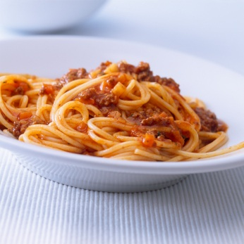

Spaghetti Bolognese
- Spaghetti (500g)
- Water (1 litre)
- Salt
- Bacon Rashers x 7
- Dolmio Bolognese mix (1 Tub)
- Cooking Oil
- Cheese (Grated)
Method:
- Prepepare by boiling the water. When the water is boiled add the paghetti and a pinch of salt.
- While the spaghetti is cooking chop up the bacon into think strips about an inch long.
- Preheat a pan and add cooking oil, when the cooking oil is getting hot begin to fry the bacon.
- When you see the spaghetti being ready remove the water and put the spaghetti into the frying pan with the bacon. Additionally add the Dolmio Bolognese mix.
- When the contents are ready put desired amount on a plate and sprinckle with grated cheese.
Enjoy your meal!